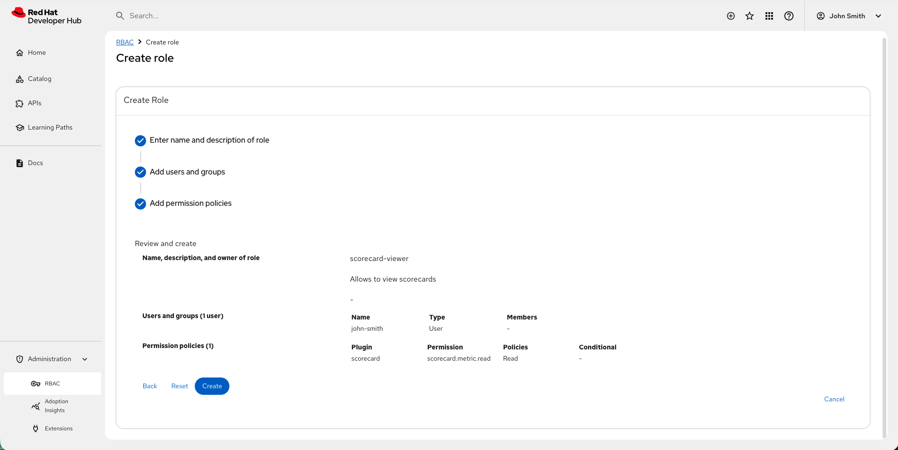

Evaluate project health using Scorecards
Setting up, configuring, and managing customizable Project Health Scorecards
Abstract
- Preface
- 1. Component health and compliance monitoring using Scorecards
- 2. Available scorecard metric providers and metric IDs
- 3. Set up Scorecards to monitor your project health
- 4. Install and configure Scorecards to view metrics
- 4.1. Integrate GitHub health metrics using Scorecards
- 4.2. Integrate Jira health metrics using Scorecards
- 4.3. Integrate OpenSSF security metrics by using Scorecards
- 4.4. Configure file-level checks to verify repositories contain required compliance documentation
- 4.5. Disable specific scorecard metrics per entity
- 4.6. Disable scorecard metrics globally
- 5. Scorecard metric thresholds
- 5.1. Scorecard metric threshold categorization rules
- 5.2. Supported Scorecard threshold expression syntax
- 5.3. Scorecard metric threshold precedence
- 5.4. Standardize Scorecard metric thresholds across components
- 5.5. Override rules to configure entity-specific thresholds in Scorecards
- 5.6. Verify logical flow in Scorecard threshold rules
- 5.7. Configure custom severity levels and colors for Scorecard
- 5.8. Scorecard color and icon configuration formats
- 6. Monitor component health and readiness with Scorecard metrics
- 7. Monitor collective health across components
- 7.1. Monitor portfolio health with aggregated KPIs
- 7.2. Aggregated KPIs in the scorecard
- 7.3. Configure aggregated KPIs for the scorecard
- 7.4. View detailed metrics from aggregated scorecard KPIs
- 7.5. Schedule metrics to avoid API limits
- 7.6. Adjust metric retention to manage storage
- 7.7. Establishing ownership in the Software Catalog
- 7.8. View aggregated metrics for owned entities
- 7.9. Available metric data for entities
- 7.10. Scorecard card configuration parameters
- 7.11. Scorecard plugin REST API endpoints and parameters
- 8. Configure scorecard cards on the homepage
- 8.1. Configure a default scorecard aggregation card
- 8.2. Configure an aggregation card with a status-grouped tracking type
- 8.3. Configure an aggregation card with an average tracking type
- 8.4. Configure portfolio health on a customizable home page
- 8.5. Configure portfolio health on a read-only home page
Preface
Visualize the health, security posture, and compliance of your software components by centrally monitoring KPIs collected from third-party systems like GitHub and Jira.
Chapter 1. Component health and compliance monitoring using Scorecards
This section describes Developer Preview features in the Scorecard plugin. Developer Preview features are not supported by Red Hat in any way and are not functionally complete or production-ready. Do not use Developer Preview features for production or business-critical workloads. Developer Preview features provide early access to functionality in advance of possible inclusion in a Red Hat product offering. Customers can use these features to test functionality and provide feedback during the development process. Developer Preview features might not have any documentation, are subject to change or removal at any time, and have received limited testing. Red Hat might provide ways to submit feedback on Developer Preview features without an associated SLA.
For more information about the support scope of Red Hat Developer Preview features, see Developer Preview Support Scope.
Use the Scorecard plugin to achieve the following goals:
- Identify and prioritize risks: Use unified health data to make faster remediation decisions.
- Maintain security standards: Automatically surface compliance gaps to enforce best practices.
- Streamline workflows: Access all metrics in RHDH to reduce development overhead.
- Standardize service quality: Define and measure consistent health criteria across the organization.

Chapter 2. Available scorecard metric providers and metric IDs
The Scorecard plugin gathers data from third-party systems through metric providers. Use the following table to identify which metrics are available for each supported provider.
The following metric providers are supported:
| Provider | Metric ID | Title | Description | Type | Thresholds |
|---|---|---|---|---|---|
|
GitHub |
|
GitHub open PRs |
Number of open pull requests in GitHub. |
number |
Configurable |
|
Jira |
|
Jira open issues |
Number of open issues in Jira. |
number |
Configurable |
|
OpenSSF |
|
Binary Artifacts |
Determines if the project has generated executable (binary) artifacts in the source repository. |
score (0-10) |
Fixed |
|
OpenSSF |
|
Branch Protection |
Determines if the default and release branches are protected with branch protection settings. |
score (0-10) |
Fixed |
|
OpenSSF |
|
CII Best Practices |
Determines if the project has an OpenSSF (formerly CII) Best Practices Badge. |
score (0-10) |
Fixed |
|
OpenSSF |
|
CI Tests |
Determines if the project runs tests before pull requests are merged. |
score (0-10) |
Fixed |
|
OpenSSF |
|
Code Review |
Determines if the project requires human code review before pull requests are merged. |
score (0-10) |
Fixed |
|
OpenSSF |
|
Contributors |
Determines if the project has a set of contributors from multiple organizations. |
score (0-10) |
Fixed |
|
OpenSSF |
|
Dangerous Workflow |
Determines if the project’s GitHub Action workflows avoid dangerous patterns. |
score (0-10) |
Fixed |
|
OpenSSF |
|
Dependency Update Tool |
Determines if the project uses a dependency update tool. |
score (0-10) |
Fixed |
|
OpenSSF |
|
Fuzzing |
Determines if the project uses fuzzing. |
score (0-10) |
Fixed |
|
OpenSSF |
|
License |
Determines if the project has defined a license. |
score (0-10) |
Fixed |
|
OpenSSF |
|
Maintained |
Determines if the project is actively maintained. |
score (0-10) |
Fixed |
|
OpenSSF |
|
Packaging |
Determines if the project is published as a package. |
score (0-10) |
Fixed |
|
OpenSSF |
|
Pinned Dependencies |
Determines if the project has declared and pinned the dependencies of its build process. |
score (0-10) |
Fixed |
|
OpenSSF |
|
SAST (Static Analysis Security Testing) |
Determines if the project uses static code analysis. |
score (0-10) |
Fixed |
|
OpenSSF |
|
Security Policy |
Determines if the project has published a security policy. |
score (0-10) |
Fixed |
|
OpenSSF |
|
Signed Releases |
Determines if the project cryptographically signs release artifacts. |
score (0-10) |
Fixed |
|
OpenSSF |
|
Token Permissions |
Determines if the project’s workflows follow the principle of least privilege. |
score (0-10) |
Fixed |
|
OpenSSF |
|
Vulnerabilities |
Determines if the project has open, known unfixed vulnerabilities. |
score (0-10) |
Fixed |
|
Filecheck |
|
<key> |
Verifies that the configured file exists in the repository. The metric ID suffix and title are derived from the key you define in |
boolean |
Fixed |
For OpenSSF metrics, the fixed thresholds are: Error (score below 2), Warning (score between 2 and 7), Success (score above 7). For Filecheck metrics, the fixed thresholds are: exist (file present, success) and missing (file absent, error). For GitHub and Jira metrics, you can customize thresholds. For more information, see Scorecard metric thresholds.
Chapter 3. Set up Scorecards to monitor your project health
You can set up and configure Scorecards so you can track key metrics and quickly understand the health of your projects in Red Hat Developer Hub.
3.1. Enable Scorecards
To monitor component health and quality in RHDH, you must enable the Scorecard plugin in your configuration.
Prerequisites
Procedure
Add the following configuration in your RHDH
dynamic-plugin-config.yamlfile:plugins: - package: oci://ghcr.io/redhat-developer/rhdh-plugin-export-overlays/red-hat-developer-hub-backstage-plugin-scorecard:<tag> disabled: false pluginConfig: dynamicPlugins: frontend: red-hat-developer-hub.backstage-plugin-scorecard: entityTabs: - path: '/scorecard' title: Scorecard mountPoint: entity.page.scorecard mountPoints: - mountPoint: entity.page.scorecard/cards importName: EntityScorecardContent config: layout: gridColumn: 1 / -1 if: allOf: - isKind: component - package: oci://ghcr.io/redhat-developer/rhdh-plugin-export-overlays/red-hat-developer-hub-backstage-plugin-scorecard-backend:<tag> disabled: falsewhere:
<tag>Enter your RHDH version of Backstage and the plugin version, in the format
bs_<backstage-version>__<plugin-version>(note the double underscore delimiter). To find these versions, complete the following steps:- Find your Backstage version in the RHDH release notes preface.
Locate the plugin version in the Dynamic Plugins Reference guide. For example, for RHDH 1.9 based on Backstage 1.45.3, use the format
bs_1.45.3__<plugin-version>.TipTo ensure environment stability, use a SHA256 digest instead of a version tag. See Determining SHA256 Digests.
3.2. Configure RBAC for Scorecards by using the RBAC CSV file
You can grant read access to Scorecard metrics by adding permission policies to your RBAC CSV file.
Prerequisites
- You have enabled RBAC and assigned a policy administrator role.
-
You have added
scorecardto the list of authorized plugins under yourpermission.rbac.pluginsWithPermissionconfiguration.
Procedure
Add the following policy to your CSV file to allow users to view metrics:
g, user:default/<YOUR_USERNAME>, role:default/scorecard-viewer p, role:default/scorecard-viewer, scorecard.metric.read, read, allow p, role:default/scorecard-viewer, catalog.entity.read, read, allow
Optional: Restrict access to specific metrics by defining a conditional policy in the
rbac-conditional-policies.yamlfile as described in Defining conditional policies:result: CONDITIONAL roleEntityRef: "role:default/scorecard-viewer" pluginId: scorecard resourceType: scorecard-metric permissionMapping: - read conditions: rule: HAS_METRIC_ID resourceType: scorecard-metric params: metricIds: [<your_metric_id>]where:
metricIdsEnter the metric ID for user access, such as
github.open_prs.This policy allows users to read only the specified metrics and restricts access to all other metrics.
Verification
- Verify that the user can view Scorecard metrics in RHDH.
3.3. Configure RBAC for Scorecards by using the Web UI
You can grant read access to Scorecard metrics by using the RBAC Web UI in RHDH.
Prerequisites
- You have added a custom Developer Hub application configuration.
-
You have added
scorecardto the list of authorized plugins under yourpermission.rbac.pluginsWithPermissionconfiguration.
Procedure
- In the Red Hat Developer Hub navigation menu, go to Administration > RBAC.
- Select or create the Role for Scorecard access.
- In the Add permission policies section, select Scorecard from the plugins list.
Expand the Scorecard entry, select policy with the following details, and click Next:
-
Name:
scorecard.metric.read Permission:
read
-
Name:
Optional: Restrict access to specific metrics:
In the Add permission policies step, select the following:
-
Name:
scorecard.metrics.read -
Permission:
Read
-
Name:
- Click Use advanced customized permissions to allow access to specific parts of the selected resource type under Actions.
-
Select the
HAS_METRIC_IDrule and specify the plugin IDs, using commas to separate multiple IDs.
Verification
- Verify that the user can view Scorecard metrics in RHDH.
Chapter 4. Install and configure Scorecards to view metrics
You can install and configure GitHub, Jira, and OpenSSF Scorecards to display metrics and visual health status for software components in the RHDH catalog.
4.1. Integrate GitHub health metrics using Scorecards
You can configure the GitHub Scorecard plugin to display repository metrics in your RHDH catalog. This integration allows you to monitor component health and security risks directly from Red Hat Developer Hub.
You can grant RHDH access to the GitHub API by using a GitHub App or a GitHub token.
For long-lived integrations or organizational access, you must use a GitHub App.
Prerequisites
- You have installed your RHDH instance.
- You have installed the Scorecard images.
- Optional: If you choose the GitHub App option, you must have permissions in GitHub to create and manage a GitHub App.
- You have added a custom Developer Hub application configuration.
Procedure
Grant GitHub API access: Create one of the following authentication methods:
Configure using a GitHub App.
Create a GitHub App with the required permissions (Read-only for Contents to allow reading repositories).
NoteYou must install the GitHub App on the organization (or user account) that owns repositories you want access to, granting it the necessary repository access permissions.
- In the General > Clients secrets section, click Generate a new client secret.
- In the General > Private keys section, click Generate a private key.
- In the Install App tab, choose an account to install your GitHub App on.
- Record the App ID, Client ID, Client Secret, and Private key values.
Add secrets to RHDH by adding the following key/value pairs to your RHDH secrets. You can use these secrets in the RHDH configuration files by using the corresponding environment variable name for each secret.
-
GITHUB_INTEGRATION_APP_ID:: The saved App ID. -
GITHUB_INTEGRATION_CLIENT_ID:: The saved Client ID. -
GITHUB_INTEGRATION_CLIENT_SECRET:: The saved Client Secret. -
GITHUB_INTEGRATION_HOST_DOMAIN:: The GitHub host domain:github.com. -
GITHUB_INTEGRATION_ORGANIZATION:: Your GitHub organization name, such as<your_github_organization_name>. -
GITHUB_INTEGRATION_PRIVATE_KEY_FILE:: The saved Private key content.
-
Configure the GitHub integration in your RHDH
app-config.yamlfile by adding the authentication details to theintegrations.githubsection:integrations: github: - host: ${GITHUB_INTEGRATION_HOST_DOMAIN} apps: - appId: ${GITHUB_INTEGRATION_APP_ID} clientId: ${GITHUB_INTEGRATION_CLIENT_ID} clientSecret: ${GITHUB_INTEGRATION_CLIENT_SECRET} privateKey: | ${GITHUB_INTEGRATION_PRIVATE_KEY_FILE}
Configure using a GitHub token.
Create a GitHub token with the following permissions:
-
Classic Personal Access Token (PAT): Select the
reposcope for read/write access to private repositories. Fine-Grained Personal Access Token (PAT):
- Choose the specific repositories that RHDH must access.
- Grant the token a Read permission for Contents.
-
Classic Personal Access Token (PAT): Select the
Add the token to RHDH secrets by adding the following key/value pair to your RHDH secrets.
where:
GITHUB_TOKEN- The generated GitHub token.
Configure the GitHub integration in your RHDH
app-config.yamlfile by adding the authentication details to theintegrations.githubsection:integrations: github: - host: github.com token: ${GITHUB_TOKEN}
Enable the GitHub Scorecard plugin: Add the GitHub Scorecard module to your RHDH
dynamic-plugins-config.yamlfile:plugins: - package: oci://ghcr.io/redhat-developer/rhdh-plugin-export-overlays/red-hat-developer-hub-backstage-plugin-scorecard-backend-module-github:<tag> disabled: falsewhere:
<tag>-
Enter your RHDH version of Backstage and the plugin version, in the format
bs_<backstage-version>__<plugin-version>(note the double underscore delimiter). To find these versions, complete the following steps:
- Find your Backstage version in the RHDH release notes preface.
Locate the plugin version in the Dynamic Plugins Reference guide. For example, for RHDH 1.9 based on Backstage 1.45.3, use the format
bs_1.45.3__<plugin-version>.TipTo ensure environment stability, use a SHA256 digest instead of a version tag. See Determining SHA256 Digests.
Annotate catalog entities: Link a component to the GitHub data source by editing the
catalog-info.yamlfile for your RHDH entity and adding the required annotations as shown in the following code:apiVersion: backstage.io/v1alpha1 kind: Component metadata: name: my-service annotations: # Required: GitHub project slug in format "owner/repository" github.com/project-slug: myorg/my-service # Required: Entity source location backstage.io/source-location: url:https://github.com/myorg/my-service spec: type: service lifecycle: production owner: _<your_team_name>_where:
annotations:github.com/project-slug-
The GitHub repository format, for example,
owner/repository. annotations:backstage.io/source-location-
The entity source location format, for example,
url:https://github.com/owner/repository. spec:ownerYour team name.
NoteYou must add the team entity to the Catalog to ensure the provided permissions are applicable.
Ingest the catalog entity: Add the location of your
catalog-info.yamlto thecatalog.locationssection in your RHDHapp-config.yamlfile:catalog: locations: - type: url target: https://github.com/<owner>/<repository>/catalog-info.yamlOptional: Customize thresholds: Define custom roles for the GitHub Open Pull Requests (
github.open_prs) metric in your RHDHapp-config.yamlfile:scorecard: plugins: github: open_prs: thresholds: rules: - key: success expression: '<10' - key: warning expression: '10-50' - key: error expression: '>50'where:
scorecard:plugins:github:open_prs:thresholds- Lists the default threshold values for the GitHub open PRs metric.
4.2. Integrate Jira health metrics using Scorecards
You can configure the Jira Scorecard plugin to display project tracking and delivery velocity data in your RHDH instance. This integration centralizes development status and facilitates the evaluation of component readiness.
The plugin supports Jira Cloud (API v3) and Jira Data Center (API v2).
Prerequisites
- You must have administrator privileges for Jira and RHDH.
- You have installed your RHDH instance.
- You have installed the Scorecard images.
- You have added a custom Developer Hub application configuration.
Procedure
Generate a Jira configuration token using one of the following methods, depending on your Jira product:
Jira Cloud: Create a personal token. You must create a
Base64-encodedstring using the following plain text format:your-atlassian-email:your-jira-api-token.$ echo -n 'your-atlassian-email:your-jira-api-token' | base64
- Jira data center: Create a Personal Access Token (PAT) in your Jira data center account.
Add Jira secrets: Define the following key/value pairs in your RHDH secrets:
JIRA_TOKEN- Enter your generated Jira token.
JIRA_BASE_URL- Enter your Jira base URL.
Configure the plugin: In your RHDH
dynamic-plugins-config.yamlfile, enable the plugin using either a direct setup or a proxy setup.NoteYou must use the proxy setup to ensure configuration compatibility if you also use the Roadie Jira Frontend Plugin.
Use a direct setup:
Add the following code to your RHDH
dynamic-plugins-config.yamlfile:plugins: - package: oci://ghcr.io/redhat-developer/rhdh-plugin-export-overlays/red-hat-developer-hub-backstage-plugin-scorecard-backend-module-jira:<tag> disabled: falsewhere:
<tag>-
Enter your RHDH version of Backstage and the plugin version, in the format
bs_<backstage-version>__<plugin-version>(note the double underscore delimiter). To find these versions, complete the following steps:
- Find your Backstage version in the RHDH release notes preface.
Locate the plugin version in the Dynamic Plugins Reference guide. For example, for RHDH 1.9 based on Backstage 1.45.3, use the format
bs_1.45.3__<plugin-version>.TipTo ensure environment stability, use a SHA256 digest instead of a version tag. See Determining SHA256 Digests.
In your RHDH
app-config.yamlfile, add the following direct setup settings:jira: baseUrl: ${JIRA_BASE_URL} token: ${JIRA_TOKEN} product: _<jira_product>_where:
baseUrl- The base URL of your Jira instance, configured under ${JIRA_BASE_URL} in your RHDH secrets.
token- The Jira token (Base64 string for Cloud, PAT for Data Center), configured under ${JIRA_TOKEN} in your RHDH secrets.
productEnter the supported product:
cloudordatacenter.- Use a proxy setup:
In your RHDH
dynamic-plugins-config.yamlfile, add the following code:plugins: - package: oci://ghcr.io/redhat-developer/rhdh-plugin-export-overlays/red-hat-developer-hub-backstage-plugin-scorecard-backend-module-jira:<tag> disabled: falsewhere:
<tag>-
Enter your RHDH version of Backstage and the plugin version, in the format
bs_<backstage-version>__<plugin-version>(note the double underscore delimiter). To find these versions, complete the following steps:
- Find your Backstage version in the RHDH release notes preface.
Locate the plugin version in the Dynamic Plugins Reference guide. For example, for RHDH 1.9 based on Backstage 1.45.3, use the format
bs_1.45.3__<plugin-version>.TipTo ensure environment stability, use a SHA256 digest instead of a version tag. See Determining SHA256 Digests.
In your RHDH
app-config.yamlfile, add the following proxy settings:proxy: endpoints: '/jira/api': target: ${JIRA_BASE_URL} headers: Accept: 'application/json' Content-Type: 'application/json' X-Atlassian-Token: 'no-check' Authorization: ${JIRA_TOKEN} # Must be configured in your environment jira: proxyPath: /jira/api product: cloud # Change to 'datacenter' if using Jira Datacenterwhere:
target- The base URL of your Jira instance, configured under ${JIRA_BASE_URL} in your RHDH secrets.
AuthorizationThe Jira token, configured under ${JIRA_TOKEN} in your RHDH secrets. Set the token value as one of the following values:
-
For Cloud:
Basic YourCreatedCloudToken -
For Data Center:
Bearer YourJiraToken
-
For Cloud:
Annotate catalog entities: Add the Jira project key to the
metadata.annotationssection of thecatalog-info.yamlfile for your component:apiVersion: backstage.io/v1alpha1 kind: Component metadata: name: my-service annotations: jira/project-key: PROJECT jira/component: Component jira/label: UI jira/team: 9d3ea319-fb5b-4621-9dab-05fe502283e jira/custom-filter: 'reporter = "abc@xyz.com" AND resolution is not EMPTY' spec: type: website lifecycle: experimental owner: guests system: examples providesApis: [example-grpc-api]where:
jira/project-key- Required: Enter the Jira project key.
jira/component- Optional: Enter the Jira component name.
jira/label- Optional: Enter the Jira label.
jira/team- Optional: Enter the Jira team ID (not the team title).
jira/custom-filter- Optional: Enter a custom Jira Query Language (JQL) filter.
Ingest the catalog entity: Add the location of your
catalog-info.yamlto thecatalog.locationssection in the RHDHapp-config.yamlfile:catalog: locations: - type: url target: https://github.com/<owner>/<repository>/catalog-info.yamlOptional: Define metric thresholds and filters: To customize health criteria or filter issues, add the Jira Open Issues metric thresholds to your RHDH
app-config.yamlfile:scorecard: plugins: jira: open_issues: thresholds: rules: - key: success expression: '<10' - key: warning expression: '10-50' - key: error expression: '>50'where:
scorecard:plugins:jira:open_issues:thresholds- Lists the default threshold values for the Jira Open Issues metric.
Optional: Define global or custom mandatory filters that entities can override by adding the following code to your RHDH
app-config.yamlfile:scorecard: plugins: jira: open_issues: options: mandatoryFilter: Type = Task AND Resolution = Unresolved customFilter: priority in ("Critical", "Blocker")where:
mandatoryFilter-
Optional: Replaces the default filter (
type = Bug and resolution = Unresolved). customFilterOptional: Specifies a global custom filter. The entity annotation
jira/custom-filteroverrides this value.For more information about how to customize the threshold values, see Thresholds in Scorecard plugins.
4.3. Integrate OpenSSF security metrics by using Scorecards
This section describes Developer Preview features in the Scorecard plugin. Developer Preview features are not supported by Red Hat in any way and are not functionally complete or production-ready. Do not use Developer Preview features for production or business-critical workloads. Developer Preview features provide early access to functionality in advance of possible inclusion in a Red Hat product offering. Customers can use these features to test functionality and provide feedback during the development process. Developer Preview features might not have any documentation, are subject to change or removal at any time, and have received limited testing. Red Hat might provide ways to submit feedback on Developer Preview features without an associated SLA.
For more information about the support scope of Red Hat Developer Preview features, see Developer Preview Support Scope.
You can configure the OpenSSF Scorecard module to display security and compliance metrics from the OpenSSF Scorecard project in your RHDH catalog.
By default, the module fetches data from the public OpenSSF Scorecard API, which requires no authentication and supports public GitHub repositories. Alternatively, the annotation can point to any HTTPS endpoint that serves OpenSSF Scorecard JSON data, such as a self-hosted instance or a static file.
Prerequisites
- You have installed your RHDH instance.
- You have set up the Scorecard plugin.
- You have added a custom Developer Hub application configuration.
- The target repositories are publicly accessible on GitHub, or you have an alternative HTTPS endpoint that serves OpenSSF Scorecard JSON data.
Procedure
Enable the OpenSSF Scorecard module: Add the following configuration to your RHDH
dynamic-plugins-config.yamlfile:plugins: - package: oci://ghcr.io/redhat-developer/rhdh-plugin-export-overlays/red-hat-developer-hub-backstage-plugin-scorecard-backend-module-openssf:<tag> disabled: falsewhere:
<tag>-
Enter your RHDH version of Backstage and the plugin version, in the format
bs_<backstage-version>__<plugin-version>(note the double underscore delimiter). To find these versions, complete the following steps:
- Find your Backstage version in the RHDH release notes preface.
Locate the plugin version in the Dynamic Plugins Reference guide. For example, for RHDH 1.9 based on Backstage 1.45.3, use the format
bs_1.45.3__<plugin-version>.TipTo ensure environment stability, use a SHA256 digest instead of a version tag. See Determining SHA256 Digests.
Annotate catalog entities: Link a component to the OpenSSF Scorecard data source by editing the
catalog-info.yamlfile for your RHDH entity and adding the required annotation as shown in the following code:apiVersion: backstage.io/v1alpha1 kind: Component metadata: name: my-service annotations: openssf/scorecard-location: https://api.securityscorecards.dev/projects/github.com/_<owner>_/_<repository>_ spec: type: service lifecycle: production owner: _<your_team_name>_where:
annotations:openssf/scorecard-location-
Specifies the full URL to the OpenSSF Scorecard API endpoint for the repository. The URL must start with
https://. spec:ownerSpecifies your team name.
NoteFor organizations running a self-hosted OpenSSF Scorecard instance, replace
api.securityscorecards.devwith the URL of your instance.
Ingest the catalog entity: Add the location of your
catalog-info.yamlto thecatalog.locationssection in your RHDHapp-config.yamlfile:catalog: locations: - type: url target: https://github.com/<owner>/<repository>/catalog-info.yamlImportantOpenSSF metrics use fixed, non-configurable thresholds. Unlike GitHub and Jira metrics, you cannot customize these thresholds.
- Error
- Score below 2.
- Warning
- Score between 2 and 7.
- Success
- Score above 7.
4.4. Configure file-level checks to verify repositories contain required compliance documentation
This section describes Developer Preview features in the Scorecard plugin. Developer Preview features are not supported by Red Hat in any way and are not functionally complete or production-ready. Do not use Developer Preview features for production or business-critical workloads. Developer Preview features provide early access to functionality in advance of possible inclusion in a Red Hat product offering. Customers can use these features to test functionality and provide feedback during the development process. Developer Preview features might not have any documentation, are subject to change or removal at any time, and have received limited testing. Red Hat might provide ways to submit feedback on Developer Preview features without an associated SLA.
For more information about the support scope of Red Hat Developer Preview features, see Developer Preview Support Scope.
You can configure the Scorecard filecheck module to verify that repositories contain required files such as LICENSE, CODEOWNERS, CONTRIBUTING.md, or any file that you have configured. Each configured file generates a boolean metric that reports whether the file is present or missing.
Prerequisites
- You have installed your RHDH instance.
- You have set up the Scorecard plugin.
- You have added a custom Developer Hub application configuration.
-
Your catalog entities have the
backstage.io/source-locationannotation set. This annotation is usually added automatically during catalog ingestion.
Procedure
Enable the filecheck module: Add the following configuration to your RHDH
dynamic-plugins-config.yamlfile:plugins: - package: oci://ghcr.io/redhat-developer/rhdh-plugin-export-overlays/red-hat-developer-hub-backstage-plugin-scorecard-backend-module-filecheck:<tag> disabled: falsewhere:
<tag>-
Enter your RHDH version of Backstage and the plugin version, in the format
bs_<backstage-version>__<plugin-version>(note the double underscore delimiter). To find these versions, complete the following steps:
- Find your Backstage version in the RHDH release notes preface.
Locate the plugin version in the Dynamic Plugins Reference guide. For example, for RHDH 1.9 based on Backstage 1.45.3, use the format
bs_1.45.3__<plugin-version>.TipTo ensure environment stability, use a SHA256 digest instead of a version tag. See Determining SHA256 Digests.
Configure the files to check: Define which files to verify in your RHDH
app-config.yamlfile:scorecard: plugins: filecheck: files: license: LICENSE codeowners: CODEOWNERS contributing: CONTRIBUTING.md readme: README.mdwhere:
scorecard:plugins:filecheck:filesA map of file checks. Each key becomes a metric ID suffix (for example,
licenseproduces thefilecheck.licensemetric) and each value is the relative file path to check within the repository.ImportantFile paths must be relative. Do not use a leading
/,./, or../prefix in the path. When no files are configured, no metrics are registered and the module is inactive.
Optional: Customize the collection schedule: By default, the filecheck module collects metrics every hour. To override the schedule, add the following configuration to your RHDH
app-config.yamlfile:scorecard: plugins: filecheck: schedule: frequency: cron: '0 6 * * *' timeout: minutes: 5 initialDelay: seconds: 5NoteAll configured file checks share one schedule. The module fetches each entity’s repository tree once per run and checks all configured paths in that single request.
Verify the entity annotation: Confirm that your catalog entities have the
backstage.io/source-locationannotation set:apiVersion: backstage.io/v1alpha1 kind: Component metadata: name: my-service annotations: backstage.io/source-location: url:https://github.com/myorg/my-service spec: type: service lifecycle: production owner: _<your_team_name>_where:
annotations:backstage.io/source-location- The entity source location. The filecheck module uses this annotation to resolve the source repository and read its file tree.
spec:ownerYour team name.
NoteThis annotation is usually added automatically during catalog ingestion. If your entities are already registered in the catalog, this annotation is likely already present.
ImportantFilecheck metrics use fixed boolean thresholds. Unlike GitHub and Jira metrics, you cannot customize these thresholds.
- exist
- File is present (success).
- missing
- File is absent (error).
4.5. Disable specific scorecard metrics per entity
You can disable specific scorecard metrics for an individual catalog entity by adding an annotation to its catalog-info.yaml file. This applies to metrics from any provider, including GitHub, Jira, and OpenSSF. Disabled metrics are not calculated.
Prerequisites
- You have installed your RHDH instance.
- You have set up the Scorecard plugin.
Procedure
Add the
scorecard.io/disabled-metricsannotation to thecatalog-info.yamlfile for your RHDH entity:metadata: annotations: scorecard.io/disabled-metrics: openssf.maintained,filecheck.readme,filecheck.licensewhere:
scorecard.io/disabled-metrics- Enter a comma-separated list of metric IDs to disable for this entity. You can use IDs from any provider. For available values, see Available scorecard metric providers and metric IDs.
Additional resources
4.6. Disable scorecard metrics globally
You can disable specific scorecard metrics globally across all catalog entities, and control whether entity owners can disable additional metrics by using annotations.
Prerequisites
- You have installed your RHDH instance.
- You have set up the Scorecard plugin.
- You have added a custom Developer Hub application configuration.
Procedure
Add the following configuration to your RHDH
app-config.yamlfile:scorecard: disabledMetrics: - openssf.packaging entityAnnotations: disabledMetrics: enabled: true except: - openssf.maintainedwhere:
disabledMetrics- Enter a list of metric IDs to disable globally. Metrics in this list are always skipped and cannot be overridden by entity annotations. For available values, see Available scorecard metric providers and metric IDs.
entityAnnotations.disabledMetrics.enabled-
Enter
trueto allow entity owners to disable metrics by using thescorecard.io/disabled-metricsannotation. Enterfalseto prevent entity owners from disabling metrics. Defaults totrue. entityAnnotations.disabledMetrics.except-
Enter a list of metric IDs that entity owners cannot disable, even when
enabledistrue. Use this to ensure critical metrics always run.
Chapter 5. Scorecard metric thresholds
You can configure thresholds to turn raw metrics into meaningful health indicators, such as Success, Warning, or Error, helping you identify healthy components and detect issues early.
5.1. Scorecard metric threshold categorization rules
A threshold defines conditions or expressions to assign metric values to specific visual categories.
To categorize metric values accurately, you must follow the following evaluation rules:
- Sequential evaluation: The system processes threshold rules in the order you define them and applies only the first matching rule.
- Restrictive ordering: You must sequence rules from the most restrictive range to the least restrictive range to verify that the system assigns categories correctly.
-
Supported categories: Use only the
success,warning, anderrorkeys to define thresholds.
5.2. Supported Scorecard threshold expression syntax
Metric threshold expressions use mathematical and logical operators to evaluate data. Use the following operators to define health criteria based on the metric data type.
| Metric Type | Operator | Example Expression | Job Performed |
|---|---|---|---|
|
Number |
|
|
The category applies if the value is greater than 40. |
|
Number |
|
|
The category applies if the value is between 80 and 100 (inclusive). |
|
Boolean |
|
|
The category applies if the value is exactly true. |
5.3. Scorecard metric threshold precedence
Threshold rules follow a specific order of precedence. Higher-priority configurations override lower-priority settings, allowing you to define global defaults with entity-specific exceptions.
| Priority | Configuration Method | Location | Job Performed |
|---|---|---|---|
|
1 (Highest) |
Entity Annotations |
|
Overrides specific rules for a single component. |
|
2 (Medium) |
App Configuration |
|
Sets global rules that override provider defaults. |
|
3 (Lowest) |
Provider Defaults |
Backend Plugin Code |
Baseline rules defined by the metric source. |
5.4. Standardize Scorecard metric thresholds across components
You can define global thresholds in your RHDH app-config.yaml file to standardize health indicators across all components. Global configurations replace the default thresholds provided by a metric source.
If you omit a threshold category, such as success, the Scorecard plugin does not assign that category to the metric.
The following example defines thresholds for the jira.open_issues metric. These settings apply to all components using this metric unless an entity annotation overrides them.
scorecard:
plugins:
jira:
open_issues:
thresholds:
rules:
- key: success
expression: '<10' # fewer than 10 open issues
- key: warning
expression: '10-50' # Between 10 and 50 open issues
- key: error
expression: '>50' # More than 50 open issues5.5. Override rules to configure entity-specific thresholds in Scorecards
Use annotations in the catalog-info.yaml file of a component to override global threshold rules. These annotations merge with and take precedence over the global rules defined in your RHDH app-config.yaml file.
5.5.1. Annotation structure
The annotation key must use the following format: scorecard.io/{providerId}.thresholds.rules.{thresholdKey}: '{expression}'
| Element | Description | Example Annotation | Example Value |
|---|---|---|---|
|
|
Unique identifier of the metric |
|
|
|
|
The overridden category |
|
|
|
|
The new condition for the rule |
|
|
5.5.2. Example: Override global Jira thresholds
In the following example, the component overrides the warning and error rules for the jira.open_issues metric. The success rule remains unchanged from the global configuration.
# catalog-info.yaml
apiVersion: backstage.io/v1alpha1
kind: Component
metadata:
name: critical-production-service
annotations:
# Changes global 'warning' from '10-50' to '10-15'
scorecard.io/jira.open_issues.thresholds.rules.warning: '10-15'
# Changes global 'error' from '>50' to '>15'
scorecard.io/jira.open_issues.thresholds.rules.error: '>15'
spec:
type: service5.6. Verify logical flow in Scorecard threshold rules
To ensure Scorecard assigns the correct health status, order rules carefully, because the evaluation stops at the first matching rule.
Evaluation order for rules- To ensure the system evaluates all values correctly, sequence rules from the most strict (smallest range) value to the least strict (largest range). If rules are ordered incorrectly, a broad rule can prevent the system from reaching stricter rules.
Problematic rule order exampleIf rules are ordered incorrectly, a less restrictive rule can prevent stricter rules from being evaluated:
-
warning: <50: Any value less than 50 triggers the warning rule and stops evaluation. -
success: <10: This rule is not evaluated because all values less than 10 have already matched the preceding warning rule.
-
Correct ordering example- The following example demonstrates the correct sequence for successes, warnings, and errors:
rules:
- key: success
expression: '<10' # Most restrictive: Only values below 10
- key: warning
expression: '10-50' # Values between 10 and 50
- key: error
expression: '>50' # Least restrictive: All values above 505.7. Configure custom severity levels and colors for Scorecard
Customizing severity thresholds and color mappings in your Scorecard configuration allows you to visualize platform metrics using your organization’s custom operational terminology.
Each custom severity threshold key requires both a corresponding icon configuration value and a color parameter configuration value. The scorecard plugin validates the YAML configuration files during application startup. Omitting either property or providing an invalid value causes an initialization failure, and the Scorecard plugin fails to function.
Prerequisites
- You have administrative access to the Red Hat Developer Hub configuration files.
- You have added a custom application configuration file to your Red Hat Developer Hub deployment workspace.
- You have installed Scorecard backend and frontend plugins, and at least one Scorecard plugin module.
Procedure
-
Open the RHDH
app-config.yamlfile. -
Navigate to the
scorecard.pluginsbackend threshold definition block. Define your custom severity threshold keys by adding a structured rule entry containing your custom key string, your boundary expression, your preferred color parameter format, and a supported icon string variable.
scorecard: plugins: myDatasource: myMetric: thresholds: rules: - key: ideal expression: '<10' color: '#5CE65C' icon: star - key: warning expression: '10-50' color: 'rgb(233, 213, 2)' icon: monitor - key: critical expression: '>50' color: error.main icon: scorecardErrorStatusIconwhere:
myDatasource-
represents your specific scorecard data source, such as
jira myMetricrepresents the metric identifier, such as
open_issuesNoteCustom severity thresholds and color configurations are only functional for scorecard plugin modules that support custom rules. At this time, the
filecheck,openssf, anddependabotmodules do not support custom thresholds.
- Save the changes to the configuration file.
- Restart your Red Hat Developer Hub instance to apply the new threshold rules.
Verification
- Open the Red Hat Developer Hub UI, navigate to the Scorecard component, and verify that the custom severity levels display with the colors and icons you specified.
5.8. Scorecard color and icon configuration formats
Learn the supported color string formats and syntax rules required to map custom severity threshold keys in the configuration parser.
5.8.1. Threshold color mapping values
| Color format type | Configuration examples |
|---|---|
|
Theme palette references |
|
|
HEX hexadecimal codes |
|
|
RGB or RGBA functional strings |
|
The default threshold rules use the built-in theme palette references: success.main for success states, warning.main for warning states, and error.main for error states. You can use these standard theme indicators for custom severity levels if desired.
5.8.2. Supported threshold icon configuration formats
To determine what graphic displays in the metrics matrix block, the Scorecard plugin uses standard frontend mapping components, allowing you to specify icons using any of the following parameters.
When using Material Design strings, use only icons from the internal icon catalog, such as star or monitor. Standard upstream values that are not added, such as check, will not appear in the user interface. You can use default icons or extend the icon set with dynamic plugins.
5.8.3. Threshold icon component options
| Icon syntax layout | Value definition format examples |
|---|---|
|
Backstage system icons |
|
|
Material Design icon strings |
|
|
Inline SVG strings |
Raw XML element blocks (for example, |
|
External URLs |
|
|
Data encoded URIs |
|
The default threshold rules use pre-configured icons: scorecardSuccessStatusIcon for success rule matches, scorecardWarningStatusIcon for warning rule matches, and scorecardErrorStatusIcon for error rule matches. You can use these pre-configured icons for custom severity levels if desired.
Chapter 6. Monitor component health and readiness with Scorecard metrics
You can view metrics to evaluate the health and security of your software components directly in the RHDH catalog.
Prerequisites
- You have installed your RHDH instance.
- You have configured the GitHub or Jira Scorecard (or both) plugin.
-
If RBAC is enabled, you have a role with the following permission:
scorecard.metric.read.
Procedure
- In your RHDH navigation menu, go to Catalog.
- Select the software component (catalog entity) that has Scorecard metrics configured.
- On the component Service page, click the Scorecard tab.
- Select a metric tile to view detailed data.
Chapter 7. Monitor collective health across components
As an administrator, you can use the Scorecard plugin to view the collective technical health across multiple owned applications or components. This consolidated view helps you identify high-level health trends and risks across complex projects.
7.1. Monitor portfolio health with aggregated KPIs
Use aggregated Key Performance Indicators (KPIs) to identify high-level health trends and technical risks across your portfolio. By consolidating metrics from multiple entities in the Software Catalog, you can assess the health of your entire team from a single dashboard.
To maintain RHDH performance, the Scorecard plugin fetches data from external sources on schedule and saves them to a database. Although the backend calculates KPIs in real time using this stored data, the synchronization of metrics for each entity occurs hourly by default. You have the option to customize the refresh schedule to balance your requirement for current data with the system processing load.
The aggregation endpoint (/metrics/:metricId/catalog/aggregations) summarizes metrics based on entity ownership. By default, the plugin only considers direct ownership, which includes the following entities:
- Entities you own directly.
- Entities owned by groups where you are a direct member.
The plug-in does not traverse nested group hierarchies unless you enable transitive parent group ownership.
7.2. Aggregated KPIs in the scorecard
Monitor the technical health and regulatory compliance of your infrastructure by using aggregated Key Performance Indicators (KPIs). These KPIs summarize complex data from multiple entities into a high-level overview, allowing you to identify system risks quickly.
Aggregated KPIs allow engineering and product managers to monitor the collective status of all entities the viewer owns in the Software Catalog. Instead of manually inspecting individual service scorecards, managers can use these metrics to identify broad trends or risks within their portfolio.
Aggregated metrics rely on the owner field defined in the Software Catalog entities to determine which data points to include. The scorecard plugin performs scheduled batch processing to calculate these values; therefore, aggregated data is not updated in real-time.
The plugin supports simple aggregation logic, such as summing values (SUM) or calculating averages (AVERAGE) across entities.
7.3. Configure aggregated KPIs for the scorecard
Define aggregated Key Performance Indicators (KPIs) in your configuration to provide a consolidated view of team or group health. Aggregating KPIs allows you to summarize technical metrics into high-level insights for management and stakeholders.
Prerequisites
- The scorecard plugin is installed and configured in your Red Hat Developer Hub instance.
-
You have identified the
metricIdyou want to aggregate.
Procedure
-
Access your
app-config.yamlfile. -
Navigate to the
scorecardsection and add anaggregationKPIsblock. Update the configuration to create a homepage card that summarizes a specific metric for a team portfolio. The following example adds a Jira open issues card that groups counts by threshold status for the entities that the signed-in user owns:
scorecard: aggregationKPIs: openIssuesKpi: title: 'Jira open issues KPI' description: 'Open issues across entities you own, grouped by status.' type: statusGrouped metricId: jira.open_issueswhere:
scorecard.aggregationKPIs-
Map of KPI keys to KPI definitions. Each key is an aggregation ID. For example
openIssuesKpi. title- Title shown for the KPI.
description- Short description of the KPI.
type-
Aggregation strategy. Use
statusGroupedfor counts per threshold status, oraveragefor a weighted portfolio score. metricId-
Metric provider ID. For example
jira.open_issues,github.open_prs.
- Save the configuration and restart your Red Hat Developer Hub instance.
Verification
- Navigate to the Developer Hub homepage.
- Verify that the new aggregated card is displayed with the defined name and calculated value.
7.4. View detailed metrics from aggregated scorecard KPIs
Configure the Red Hat Developer Hub Scorecard plugin to enable drill-down capabilities. This allows you to investigate the specific catalog entities and metrics that contribute to aggregated KPI scores, helping to identify and troubleshoot failing applications across a portfolio.
Prerequisites
- You have installed Red Hat Developer Hub.
- You have configured at least one Scorecard metric provider, such as GitHub or Jira.
- You have configured aggregated KPIs.
Procedure
Define the metric ID for drill-down in your
app-config.yamlfile.Drill-downs are metric-scoped. Even when you click an aggregated KPI, the system requires the underlying
metricIdto query the catalog for related entities.jira: product: cloud baseUrl: ${JIRA_URL} token: ${JIRA_TOKEN} scorecard: plugins: jira: open_issues: schedule: frequency: { minutes: 5 } timeout: { minutes: 10 } initialDelay: { seconds: 10 }Configure Role-Based Access Control (RBAC) permissions for the relevant user roles to enable scorecard access.
-
Open your RBAC policy file, typically
rbac-policy.csv. Add the following permission to read both scorecard metrics and catalog entities.
p, role:default/team_lead, scorecard.metric.read, read, allow p, role:default/team_lead, catalog.entity.read, read, allow
-
Open your RBAC policy file, typically
Verification
- Navigate to the Red Hat Developer Hub Home Page.
- Click an aggregated KPI tile, such as Critical Jira Issues.
Verify that a list of individual catalog entities appears, showing the components contributing to that aggregate score.
If the list does not appear, ensure you are using the latest version of the RHDH plugins.
7.5. Schedule metrics to avoid API limits
To balance data freshness with system performance and API rate limits, you can customize the collection frequency for Scorecard metrics. Scorecard uses the Backstage built-in scheduler service. The default refresh frequency is hourly, but you can adjust it for each metric.
Prerequisites
- You have added a custom Developer Hub application configuration.
-
You have identified the
datasourceIdandmetricNamefor the provider you want to configure.
Procedure
-
Open your RHDH
app-config.yamlfile. -
Navigate to the
scorecard.pluginssection. Add a schedule configuration for your specific data source and metric using the following structure:
scorecard: plugins: my_datasource: example_metric: schedule: frequency: cron: '0 6 * * *' timeout: minutes: 5 initialDelay: minutes: 1-
Define the schedule parameters based on the
Backstage SchedulerServiceTaskScheduleDefinitionConfigschema. - Save the file.
Restart the RHDH backend to apply the changes.
ImportantConstraints: You must make sure the configured frequency does not exceed the API rate limits of your metric provider.
Verification
- Review the backend logs to make sure the task is scheduled without errors.
- Verify that new metric data appears in the database according to the defined interval.
7.6. Adjust metric retention to manage storage
To manage storage capacity and comply with data retention policies, adjust the number of days the Scorecard plugin retains metric data to align with your organization’s policies. By default, the system retains metrics for 365 days.
Prerequisites
Procedure
-
Open your RHDH
app-config.yamlfile. In the
scorecardsection, add or update thedataRetentionDaysparameter with the desired number of days:scorecard: dataRetentionDays: 12
- Save the file.
- Restart the RHDH backend to apply the changes.
Verification
- Review the backend logs during the next scheduled cleanup cycle to make sure the job runs without errors.
- Query the database to confirm that records older than your specified limit are removed.
7.7. Establishing ownership in the Software Catalog
To enable automatic metric aggregation in the Scorecard plugin, you must establish ownership relationships between users, groups, and components in the Software Catalog. The Scorecard plugin uses these definitions to calculate health trends based on who owns the entities.
When you implement the following examples, you must replace the placeholder values with your specific project details.
Group entity-
The
Groupentity defines a team within a specific namespace.
apiVersion: backstage.io/v1alpha1 kind: Group metadata: name: _<example_team>_ namespace: _<your_namespace>_ spec: type: team children: [user:_<your_namespace>_/userName]
User entity-
The
Userentity defines an individual and establishes their team membership by using thememberOffield.
apiVersion: backstage.io/v1alpha1
kind: User
metadata:
name: userName
title: Example User
spec:
profile:
displayName: Example User
memberOf: [group:_<your_namespace>_/example-team]Component entities-
The
Componentspecification defines the owner to include the component in a user’s or team’s aggregated metrics.
# Example of user ownership
apiVersion: backstage.io/v1alpha1
kind: Component
metadata:
name: _<user_owned_service>_
annotations:
github.com/_<your_project_name>_: example-org/example-repository
jira/project-key: ET
spec:
type: service
owner: user:_<your_namespace>_/userName
lifecycle: production# Example of group ownership
apiVersion: backstage.io/v1alpha1
kind: Component
metadata:
name: _<group_owned_service>_
annotations:
github.com/_<your_project_name>_: example-org/example-repository
jira/project-key: ET
spec:
type: service
owner: group:_<your_namespace>_/_<example_team>_
lifecycle: production7.8. View aggregated metrics for owned entities
View aggregated metrics for your owned entities in RHDH to monitor the collective health of your software portfolio. The Scorecard plugin consolidates these metrics based on your ownership definitions in the Software Catalog.
Prerequisites
- (To view aggregated KPIs) You have established owner group relationships in the Software Catalog.
- You have added a custom Developer Hub application configuration.
-
You have the
catalog.entity.readpermission for the entities included in the aggregation. -
You have the
scorecard.metric.readpermission to view aggregated metrics on the home page.
Procedure
- Navigate to your RHDH home page.
- Locate the Scorecard dashboard to view the aggregated metrics for your owned entities.
- Optional: To include entities from a nested group hierarchy in the aggregation, you must enable transitive parent group ownership.
Verification
- Confirm that the displayed Key Performance Indicators (KPIs) reflect the status of all components, systems, and resources defined under your ownership in the Software Catalog.
7.9. Available metric data for entities
Use the Scorecard API endpoints to list available metrics, retrieve values for specific catalog entities, and analyze performance trends for entities or aggregated groups.
7.9.1. Required permissions
To use these endpoints, make sure your account has the following permissions:
-
scorecard.metric.read -
catalog.entity.read(for the specific entities you intend to query)
7.9.2. API overview
The following table summarizes the available endpoints and their primary functions.
| Endpoint | Description | Query parameters |
|---|---|---|
|
|
Retrieves a list of all available metrics. |
|
|
|
Retrieves the latest metric values for a specific catalog entity. |
|
|
|
Retrieves status counts (success, warning, error) for entities you own. |
None |
7.9.3. API parameter details
Filtering metrics (GET /metrics)- Use these parameters to refine the list of metrics.
You must not use both parameters in the same request.
| Parameter | Type | Required | Description |
|---|---|---|---|
|
|
String |
No |
A comma-separated list of IDs (for example, |
|
|
String |
No |
Filter by the source ID (for example, |
Identifying entities (GET /metrics/catalog/…)- Use path parameters to specify an entity in the Software Catalog.
| Parameter | Type | Required | Description |
|---|---|---|---|
|
|
String |
Yes |
The entity type (for example, |
|
|
String |
Yes |
The entity namespace (for example, |
|
|
String |
Yes |
The specific name of the entity. |
7.9.4. Troubleshooting API errors
If a request fails, the API returns a status code and a message. Use the following table to resolve common issues.
| Status code | Error message | Resolution |
|---|---|---|
|
400 Bad Request |
Validation error |
Make sure you are not using |
|
403 Forbidden |
Permission denied |
Verify that you have both |
|
404 Not Found |
User entity reference not found |
Verify that your user account has a defined entity reference in the Software Catalog. |
7.10. Scorecard card configuration parameters
Parameters for application settings and dynamic plugin files used to manage homepage visualizations and portfolio data logic.
7.10.1. Dynamic plugin properties
| Property | Description |
|---|---|
|
|
The target identifier for the homepage visualization block. Accepts a default system metric name string or a custom KPI key mapped in your core settings. |
|
|
[Deprecated] Legacy identifier for the source metric string. Supported for backwards compatibility but scheduled for removal in a future release. Replace with |
7.10.2. Application configuration properties (scorecard.aggregationKPIs)
| Property | Description |
|---|---|
|
|
The primary textual label rendered on the header block of the homepage card. |
|
|
A brief text string summarizing the target scope of the KPI. |
|
|
The structural tracking strategy. Specify |
|
|
The unique provider identifier mapping to the individual source plugin collection layer. |
7.10.3. Options parameters for the average tracking type
options.statusScores-
Map of threshold status rule keys (
success,warning,error) to numeric weight integers. This parameter is required for theaveragetype and must be non-empty; missing or empty maps cause application startup failures. options.thresholds-
Optional numeric value array tracking custom status levels evaluated against the
averageScoreoutput value on a scale from 0 to 100 with one decimal place. If omitted, the system falls back to default values: less than 30 indicates an error, 30 to 79 indicates a warning, and 80 or higher indicates a success. Custom configurations must provide full real-line range coverage with no numeric gaps.
7.11. Scorecard plugin REST API endpoints and parameters
REST API endpoints for the scorecard plugin used to fetch portfolio evaluations and component summaries.
7.11.1. Supported REST API endpoints
| Method and endpoint | Description | Status |
|---|---|---|
|
|
Retrieves all base metrics collected by the plugin environment. |
Active |
|
|
Retrieves calculated summary parameters for a targeted portfolio grouping definition. |
Active |
|
|
Retrieves aggregated summary parameters for a specified entity grouping path. |
Deprecated |
The endpoint GET /metrics/:metricId/catalog/aggregations is deprecated. Update your platform integrations to use the new route path structure: GET /aggregations/:aggregationId.
7.11.2. API parameter definitions
aggregationId- The unique identification key tracking a targeted scorecard summary layout block.
metricId- The unique provider key tracking an individual metrics collection channel source layer.
Chapter 8. Configure scorecard cards on the homepage
Scorecard visualization cards on the Red Hat Developer Hub homepage display aggregated metrics to give engineering managers and platform teams immediate visibility into portfolio health trends.
8.1. Configure a default scorecard aggregation card
Add a standard scorecard summary card to your homepage using default, out-of-the-box configurations.
Prerequisites
- The scorecard plugin is installed and configured in your Red Hat Developer Hub instance.
- You have administrator permissions to update application configuration files.
Procedure
- Open your dynamic plugin configuration file.
-
Navigate to your scorecard card block under the
home.page/cardsmount point. Update the configuration to use the
aggregationIdproperty with an established system metric name:- mountPoint: home.page/cards importName: ScorecardHomepageCard config: props: aggregationId: "github.open_prs" layouts: xl: { w: 3, h: 6, x: 3 } lg: { w: 4, h: 6, x: 4 } md: { w: 6, h: 6, x: 6 } sm: { w: 12, h: 6 } xs: { w: 12, h: 6 } xxs: { w: 12, h: 6 }- Save the modified configuration file and restart your Red Hat Developer Hub instance.
Verification
- Access your Developer Hub homepage interface.
- Verify that the standard scorecard summary card displays with default metrics.
8.2. Configure an aggregation card with a status-grouped tracking type
Configure a scorecard aggregation card to count entities based on status thresholds.
Prerequisites
- The scorecard plugin is installed and configured in your Red Hat Developer Hub instance.
Procedure
-
Open your
app-config.yamlfile. Navigate to the
scorecardsection and define your backend Key Performance Indicator (KPI) map within anaggregationKPIsblock, setting the tracking type tostatusGrouped:scorecard: aggregationKPIs: team-alpha-bugs: title: "Team Alpha Bug KPI" description: "Portfolio bug counts grouped by status threshold" type: statusGrouped metricId: jira.open_issues- Open your dynamic plugin configuration file.
Reference your custom aggregation ID inside the homepage card properties block under the
home.page/cardsmount point:- mountPoint: home.page/cards importName: ScorecardHomepageCard config: props: aggregationId: "team-alpha-bugs" layouts: xl: { w: 3, h: 6 } lg: { w: 4, h: 6 } md: { w: 6, h: 6 } sm: { w: 12, h: 6 } xs: { w: 12, h: 6 } xxs: { w: 12, h: 6 }- Save the modified configuration files and restart your Red Hat Developer Hub instance.
Verification
- Access your Developer Hub homepage interface.
- Verify that the status-grouped scorecard summary card displays with your defined title and calculations.
8.3. Configure an aggregation card with an average tracking type
Configure a scorecard aggregation card to calculate a single weighted portfolio score across multiple components.
Prerequisites
- The scorecard plugin is installed and configured in your Red Hat Developer Hub instance.
Procedure
-
Open your
app-config.yamlfile. -
Navigate to the
scorecardsection and define your backend Key Performance Indicator (KPI) map within anaggregationKPIsblock, setting the tracking type toaverage. Add the required
statusScoresmap to bind numeric weights to your status rules:scorecard: aggregationKPIs: portfolio-average-health: title: "Portfolio Health KPI" description: "Weighted average score across portfolio components" type: average metricId: github.open_prs options: statusScores: success: 100 warning: 50 error: 0Optional: To override the built-in system defaults, add custom threshold parameters using a continuous, gapless number range evaluated on a scale of
0to100:options: statusScores: success: 100 warning: 50 error: 0 thresholds: rules: - key: success expression: '>=80' color: '#6bb300' - key: warning expression: '51-80' color: 'rgb(224, 189, 108)' - key: error expression: '<51' color: '#be1ec7' - key: critical expression: '<10' color: '#ff0000'- Open your dynamic plugin configuration file.
Reference your average tracking aggregation ID inside the homepage card properties block under the
home.page/cardsmount point:- mountPoint: home.page/cards importName: ScorecardHomepageCard config: props: aggregationId: "portfolio-average-health" layouts: xl: { w: 3, h: 6 } lg: { w: 4, h: 6 } md: { w: 6, h: 6 } sm: { w: 12, h: 6 } xs: { w: 12, h: 6 } xxs: { w: 12, h: 6 }- Save the modified configuration files and restart your Red Hat Developer Hub instance.
Verification
- Access your Developer Hub homepage interface.
- Verify that the weighted average scorecard summary card displays with your custom scores and thresholds.
8.4. Configure portfolio health on a customizable home page
You can add the aggregated Scorecard widget to a customizable RHDH home page to monitor the collective technical health of your portfolio.
Prerequisites
- You established owner group relationships in the Software Catalog.
- You have installed the Scorecard plugin.
-
You have the
scorecard.metric.readpermission. - You have added a custom Developer Hub application configuration.
Procedure
Update your RHDH
app-config.yamlwith the following code:plugins: - package: oci://ghcr.io/redhat-developer/rhdh-plugin-export-overlays/red-hat-developer-hub-backstage-plugin-scorecard:<tag> disabled: false pluginConfig: dynamicPlugins: frontend: red-hat-developer-hub.backstage-plugin-scorecard: entityTabs: - path: "/scorecard" title: Scorecard mountPoint: entity.page.scorecard mountPoints: - mountPoint: entity.page.scorecard/cards importName: EntityScorecardContent config: layout: gridColumn: 1 / -1 - mountPoint: home.page/cards importName: ScorecardHomepageCard config: id: "scorecard-jira.open_issues" title: "Jira open blocking tickets" props: metricId: "jira.open_issues" - mountPoint: home.page/cards importName: ScorecardHomepageCard config: id: "scorecard-github.open_prs" title: "GitHub open PRs" props: metricId: "github.open_prs" - package: ./dynamic-plugins/dist/red-hat-developer-hub-backstage-plugin-dynamic-home-page disabled: false pluginConfig: dynamicPlugins: frontend: red-hat-developer-hub.backstage-plugin-dynamic-home-page: dynamicRoutes: - path: / importName: DynamicCustomizableHomePagewhere:
<tag>-
Enter your RHDH version of Backstage and the plugin version, in the format
bs_<backstage-version>__<plugin-version>(note the double underscore delimiter). To find these versions, complete the following steps:
- Find your Backstage version in the RHDH release notes preface.
Locate the plugin version in the Dynamic Plugins Reference guide. For example, for RHDH 1.9 based on Backstage 1.45.3, use the format
bs_1.45.3__<plugin-version>.TipTo ensure environment stability, use a SHA256 digest instead of a version tag. See Determining SHA256 Digests.
For more information, see Customizing Red Hat Developer Hub.
- Log in to the RHDH application.
- Enter the Edit mode on the home page.
Click Add widget and select the metric to include.
NoteYou can add only one metric at a time.
- Drag the widget to your preferred layout position.
- Click Save.
Verification
- Log in to RHDH.
- On the Home page, verify that the aggregated Scorecard widget appears with the name you provided.
- Confirm that the displayed KPIs reflect the status of your owned components, systems, and resources.
8.5. Configure portfolio health on a read-only home page
You can add the aggregated Scorecard widget to a read-only RHDH home page to monitor the collective technical health of your portfolio.
Prerequisites
- You established owner group relationships in the Software Catalog.
- You have installed the Scorecard plugin.
-
You have the
scorecard.metric.readpermission. - You have added a custom Developer Hub application configuration.
Procedure
-
Open your RHDH
app-config.yamlfile. For more information, see Configuring Red Hat Developer Hub. Add the aggregated Scorecard mount points to the dynamic plugin configuration file:
plugins: - package: oci://ghcr.io/redhat-developer/rhdh-plugin-export-overlays/red-hat-developer-hub-backstage-plugin-scorecard:<tag> disabled: false pluginConfig: dynamicPlugins: frontend: red-hat-developer-hub.backstage-plugin-scorecard: entityTabs: - path: "/scorecard" title: Scorecard mountPoint: entity.page.scorecard mountPoints: - mountPoint: entity.page.scorecard/cards importName: EntityScorecardContent config: layout: gridColumn: 1 / -1 - mountPoint: home.page/cards importName: ScorecardHomepageCard config: props: metricId: "jira.open_issues" layouts: xl: { w: 3, h: 6 } lg: { w: 4, h: 6 } md: { w: 6, h: 6 } sm: { w: 12, h: 6 } xs: { w: 12, h: 6 } xxs: { w: 12, h: 6 } - mountPoint: home.page/cards importName: ScorecardHomepageCard config: props: metricId: "github.open_prs" layouts: xl: { w: 3, h: 6, x: 3 } lg: { w: 4, h: 6, x: 4 } md: { w: 6, h: 6, x: 6 } sm: { w: 12, h: 6 } xs: { w: 12, h: 6 } xxs: { w: 12, h: 6 } - package: ./dynamic-plugins/dist/red-hat-developer-hub-backstage-plugin-dynamic-home-page disabled: false pluginConfig: dynamicPlugins: frontend: red-hat-developer-hub.backstage-plugin-dynamic-home-page: dynamicRoutes: - path: / importName: DynamicHomePagewhere:
<tag>-
Enter your RHDH version of Backstage and the plugin version, in the format
bs_<backstage-version>__<plugin-version>(note the double underscore delimiter). To find these versions, complete the following steps:
- Find your Backstage version in the RHDH release notes preface.
Locate the plugin version in the Dynamic Plugins Reference guide. For example, for RHDH 1.9 based on Backstage 1.45.3, use the format
bs_1.45.3__<plugin-version>.TipTo ensure environment stability, use a SHA256 digest instead of a version tag. See Determining SHA256 Digests.
NoteThe widget automatically calculates and displays aggregations for the entities you own. You do not have to manually configure filters or specify target owner groups in the widget settings.
Verification
- Log in to RHDH.
- On the Home page, verify that the aggregated Scorecard widget appears with the name you provided.
- Confirm that the displayed KPIs reflect the status of your owned components, systems, and resources.